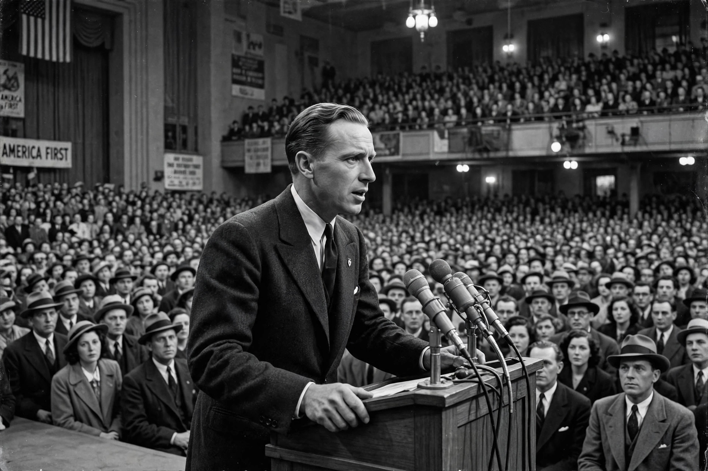

The America First Committee (AFC) was the leading American organisation opposing United States entry into the Second World War. Founded on 4 September 1940, it grew to some 800,000 members in 450 chapters and was for fifteen months the largest and most influential voice of non-interventionism in the country. It dissolved four days after the attack on Pearl Harbor.
The committee was organised by Yale law student R. Douglas Stuart Jr. and other students, with the businessman General Robert E. Wood, chairman of Sears, Roebuck, as its national chairman. Its members crossed party lines and included the future president Gerald Ford, future Supreme Court justice Potter Stewart, the diplomat's son Sargent Shriver and the young writer Gore Vidal, alongside pacifists, progressives and conservatives. The aviator Charles Lindbergh joined in April 1941 and became its best-known speaker, drawing enormous crowds — and intense controversy.
The AFC held that no foreign power could successfully invade the United States if its defences were strong, that American democracy could be preserved only by staying out of the European war, and that "aid short of war" — such as Lend-Lease to Britain — weakened the country and would lead inevitably to full involvement. It opposed President Franklin D. Roosevelt's policies and campaigned against conscription extensions and convoying.
The committee attracted a minority of anti-Semitic and pro-fascist supporters whom its leadership failed fully to expel, damaging its reputation. Lindbergh's speech at Des Moines on 11 September 1941, which named "the British, the Jewish and the Roosevelt administration" as the chief agitators for war, was widely condemned as anti-Semitic and badly hurt the cause. After Japan attacked Pearl Harbor on 7 December 1941, the committee voted to disband on 11 December, urging its members to support the war effort. Its slogan "America First" has been revived repeatedly in later American politics.